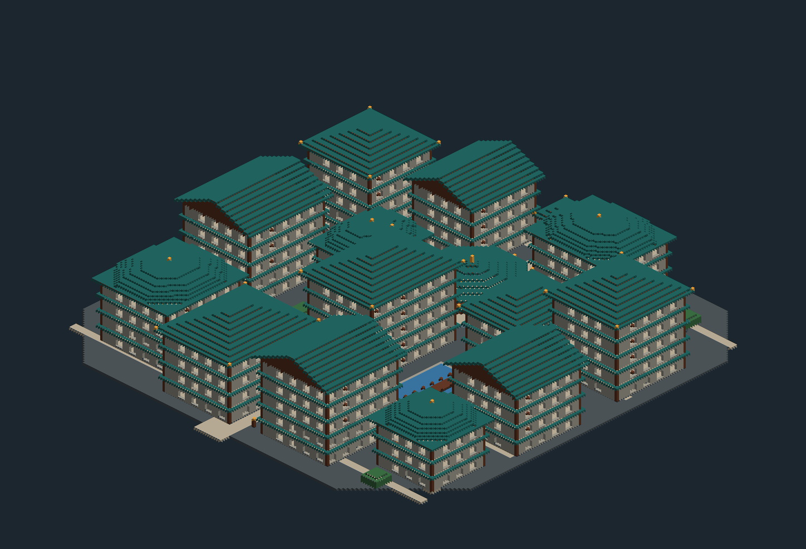
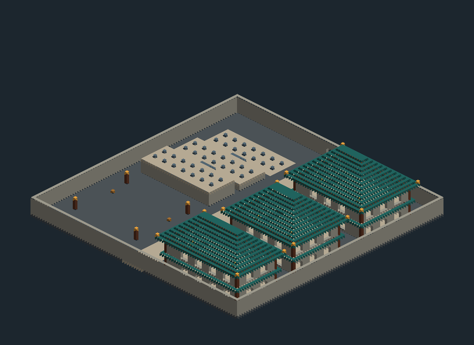

v9 建筑蓝图投影，非游戏实拍。在玩家改过的照明与楼梯基础上修缮：八角主亭、弯廊、殿内柱列、不同用途的楼层，补齐山墙、梁架和天花。144201 个实体建筑方块，另保留大量光明方块。
18 间隔光战斗室，使用真实僵尸/骷髅刷怪笼；新宝箱分别抽取原版与王朝材料。服务器实测所有刷怪区域方块光和天空光均为 0，并验证真实出怪。

96×96，带工坊、仓库和分层采料院。

已有的唯一超平坦存档：保存退出并安装 v9 后，重新进入原存档，输入 /dynasty_renovate 查看提示，再输入 /dynasty_renovate confirm。这是针对原位置的差异修缮，不是整片重建。会保留现有宝箱和后续发现的不同方块；仍建议先备份。
在创造工坊的大块空地放置；别在旧作品旁操作。站在建筑西北角，分别使用：
以下是新空地搭建命令，需先安装 v9 更新。会覆盖整片体积，请先备份，在远离旧作品的空地操作。不要用它更新原作品。无需提前加载全部区块。
/dynasty_build tiangong_citadel 查看提示；确认空地后追加 confirm 开始。
/dynasty_build tiangong_mining_estate 同理。
改完保存退出，把人物留在建筑旁，告诉我改好了。我再读存档合并，不会自动覆盖你的作品。